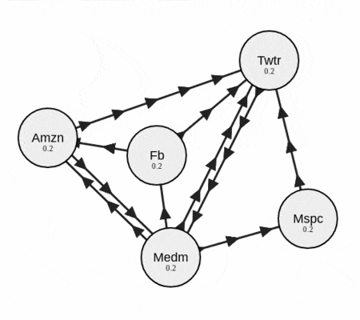
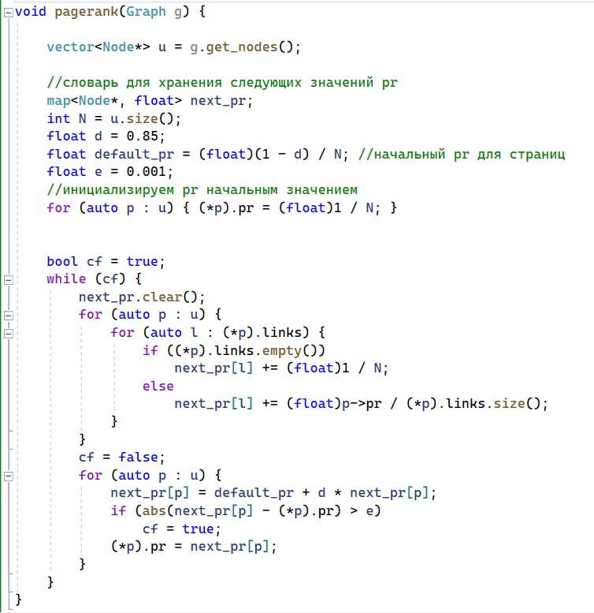
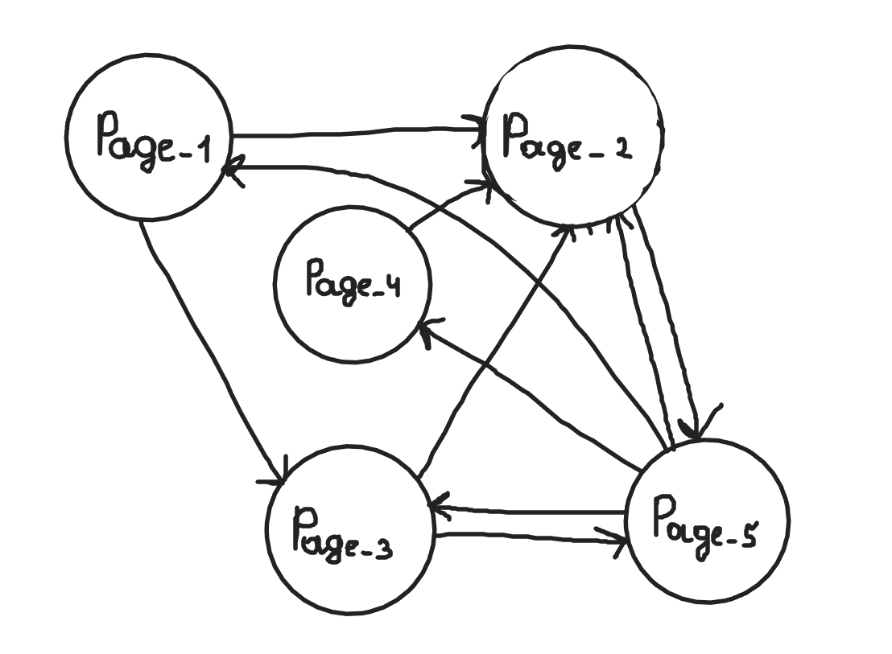
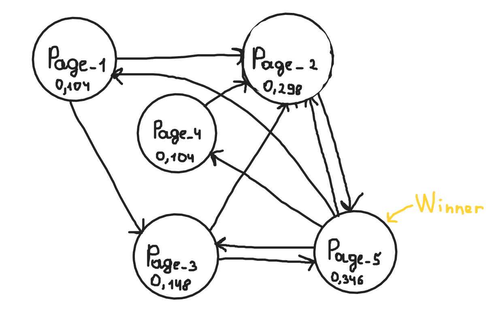

Представим, что вы заходите в свой интернет-браузер и хотите найти в нём информацию по запросу. Поисковая система находит страницы, релевантные по ключевым словам, которые вы ввели, но вот вопрос: какие из них показывать первыми, а какие последними. Каким образом можно было бы ранжировать уже найденные по запросу страницы?
И тут на помощь приходить алгоритм, который называется PageRank. Он поможет отсортировать страницы по критерию их "важности" в сети Интернет.
PageRank - это программа для вычисления собственных значений, мощный сходящийся алгоритм. Этот алгоритм производит анализ ссылок, и на основе анализа определяется порядок вывода результатов веб-поиска.
По сути, этот алгоритм можно использовать для любых проиндексированных поисковых данных, а не только для веб-страниц.
Вернёмся к нашему примеру с поиском страниц. Представим наши страницы в виде графа, где каждое направленное ребро - это ссылка одной страницы на другую. Изначально выдача не упорядочена, то есть каждая страница с равной вероятностью может оказаться первой в списке.
Другими словами, каждой странице присваивается начальный PR 1/N, где N - общее число веб-страниц в графе.
Далее алгоритм начинают свою итеративную работу, используя следующее уравнение.
Для каждого узла рассчитываем его PR. Он определяется на основании страниц, которые ссылаются на текущую страницу.
PR(i) - ранг страницы, которая ссылается на текущую.
C(i) - количество ссылок на странице, которая ссылается на текущую.
d - коэффициент затухания, по умолчанию равен 0,85.
Задав нужную нам точность вычислений рангов всех веб-страниц в графе, получаем решение за конечное число итераций.
Работа алгоритма продемонстрирована на следующей анимации:




Как видите, все просто. Спасибо за то, что прочитали мою статью.